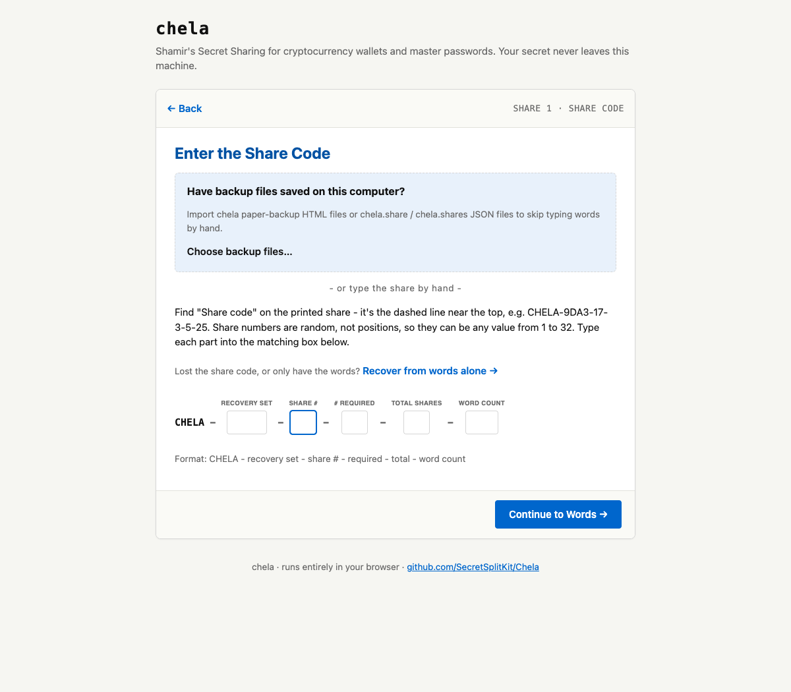
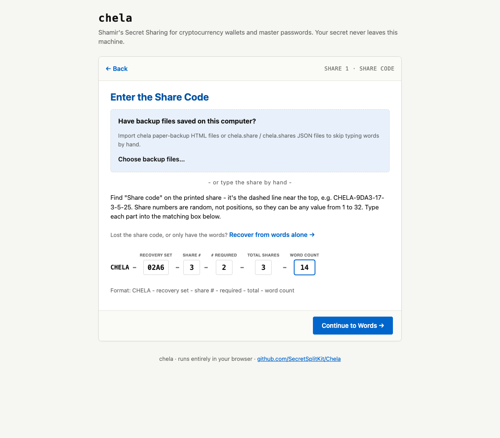
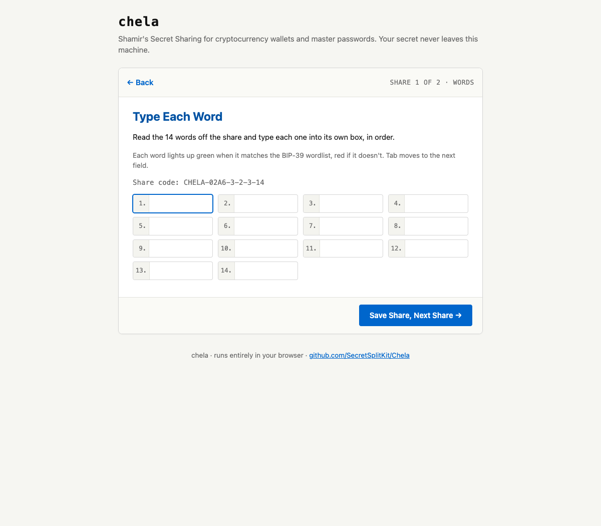
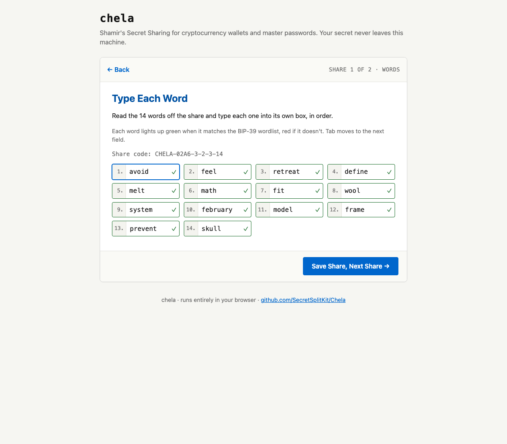
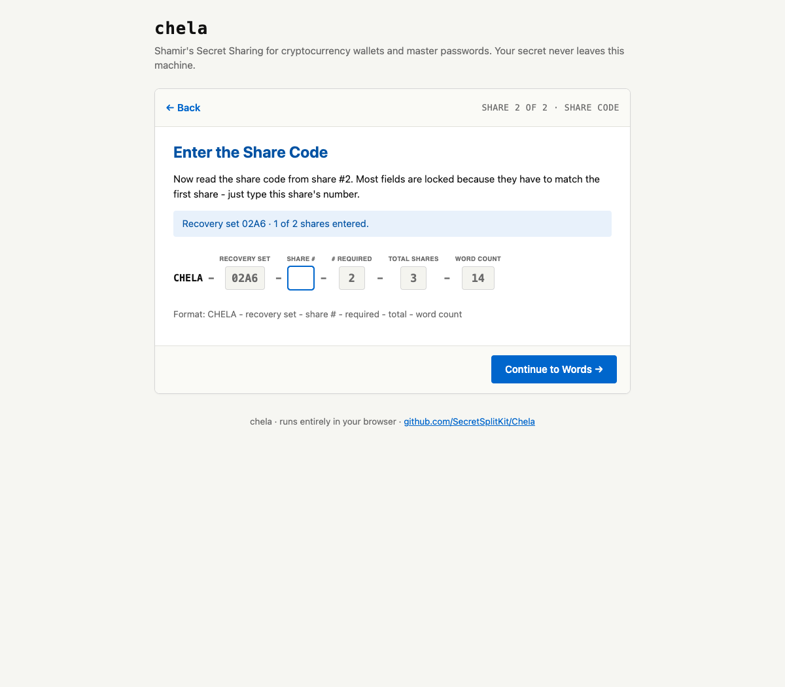
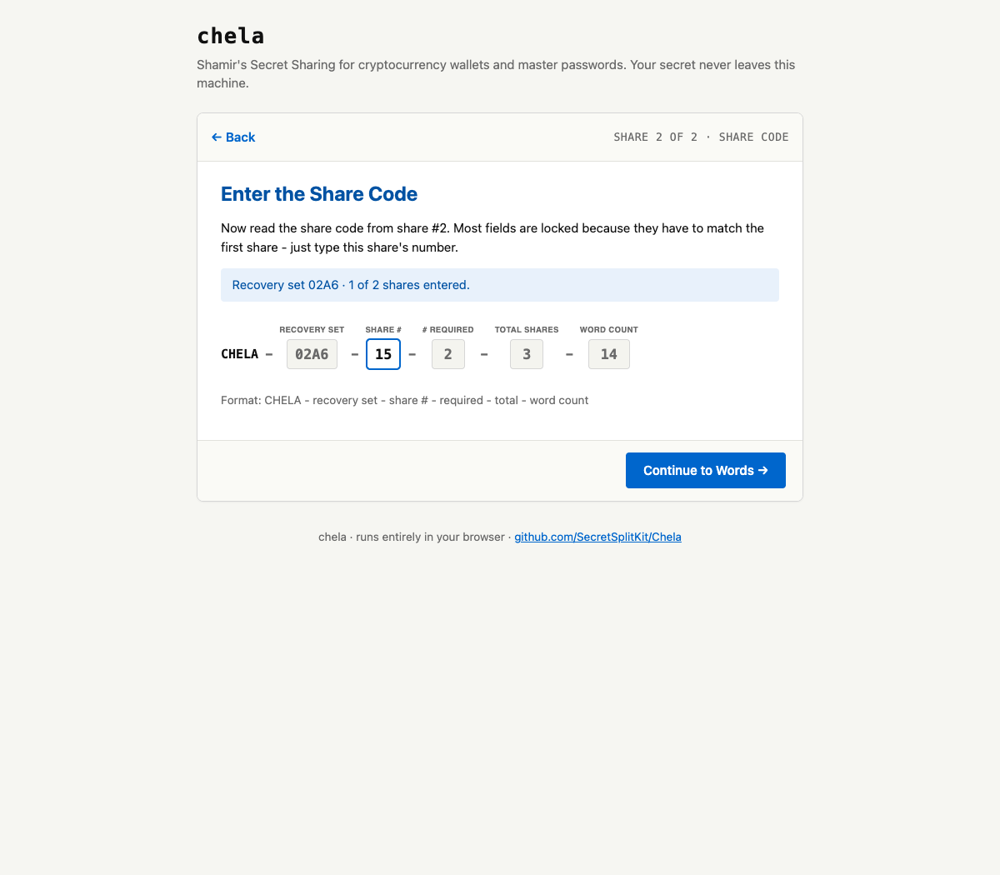
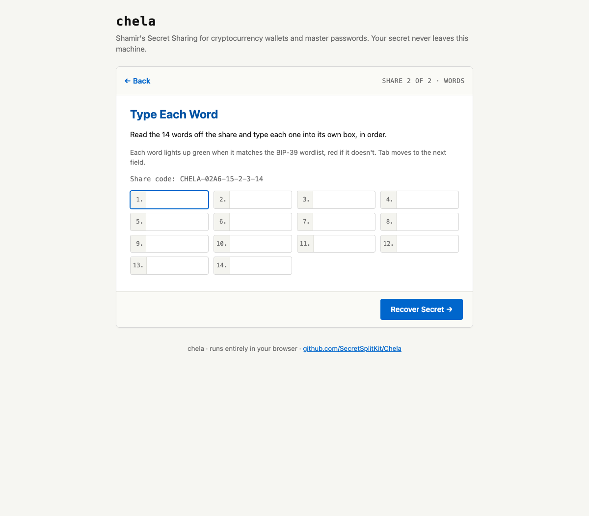
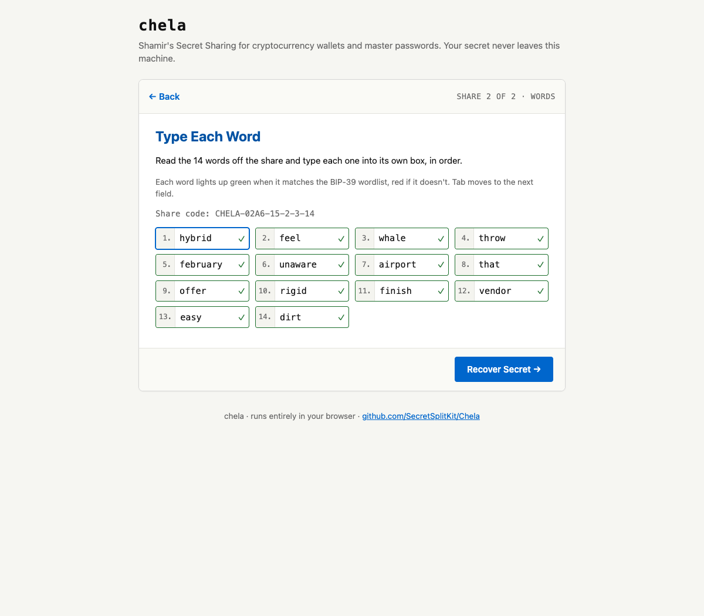
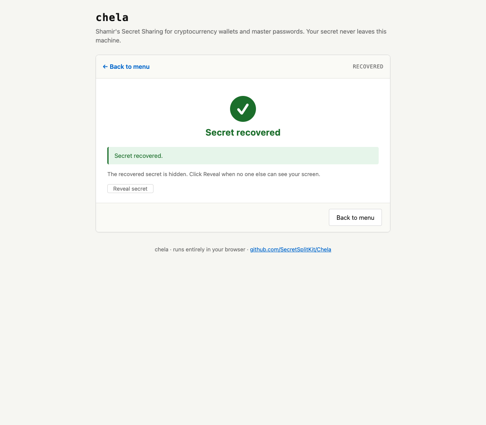
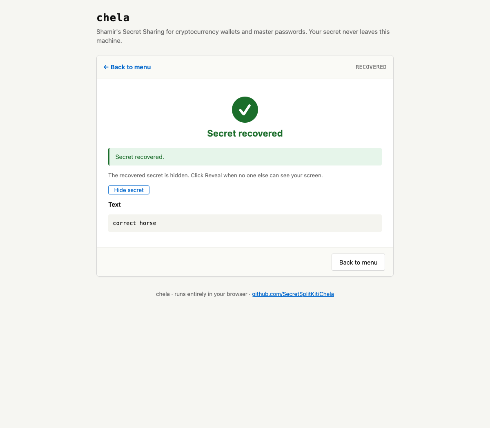

Recovery on the website
Open chela.html in your browser, offline if you can, and choose to
recover. You will enter your shares one at a time - each share's short code, then
its words - until you reach the threshold, and the page rebuilds the secret locally.
To create shares in the first place, see
splitting on the website.
1. Enter the first share's code
Each share starts with a short CHELA-... code. Type the first share's
code; it tells chela which set this share belongs to, its coordinate, and how many
words to expect.


2. Type the first share's words
Enter that share's word list. As with splitting, every word is checked against the wordlist as you type, and the share's own checksum is verified - a single mistyped word is caught here, not silently absorbed into a wrong secret.


3. Add the next share
Repeat for the next share: its code, then its words. chela confirms each new share belongs to the same set as the first - shares from a different split are refused. Keep going until you have entered the threshold number of shares.




4. Reveal the secret
Once you reach the threshold, chela rebuilds the secret - but keeps it hidden behind a Reveal button. Nothing is shown until you ask, so the secret is not sitting on screen while you are still typing or if someone is watching.

Reveal puts the secret on screen in the clear. A browser extension or injected script with access to the page can read it, and so can anyone looking. Reveal only on a machine and in a moment you trust. The threat model covers the browser's limits.

Next steps
The same recovery works in the terminal wizard and on the command line. To understand how a handful of word lists rebuilds an exact secret, read the share format.